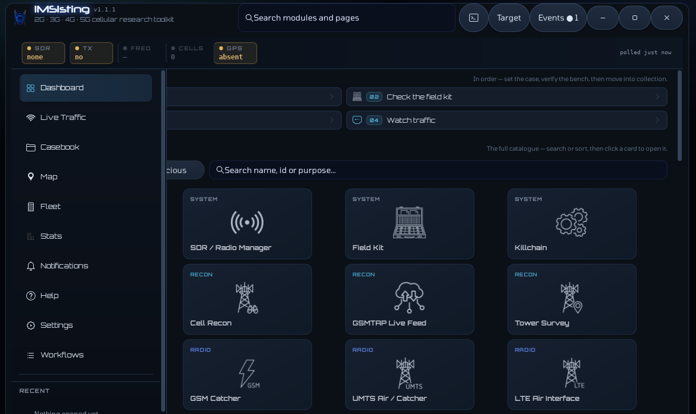
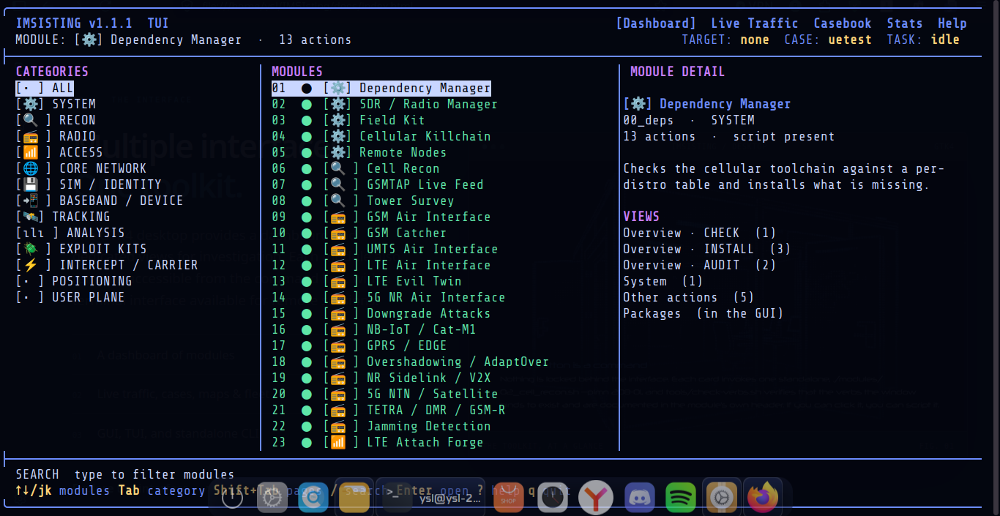

01 / OBSERVE
Radio and survey
Work with cell surveys, radio tools, and passive capture analysis from a common interface.
2G — 5GOPEN SOURCE / LINUX TOOLKIT
IMSIsting brings cellular network assessment, protocol analysis, and evidence collection together in a single Linux toolkit.
Early development. No module has been tested against a real radio. Over-the-air paths are written and reviewed, but untested. See what actually works
01 / SCOPE
Modules cover multiple generations and network interfaces, with a common workspace for their commands and results.
Work with cell surveys, radio tools, and passive capture analysis from a common interface.
2G — 5GInspect signaling, subscriber identities, and security across radio access and core network protocols.
AIR → COREOrganize observations, captures, and case evidence using shared append-only TSV stores.
EVIDENCE / TSV02 / THE INTERFACE
The GTK4 desktop provides a dashboard and dedicated views for investigation. Each module also remains accessible from the command line, with a terminal interface available for remote sessions.


03 / THE PRINCIPLE
Results distinguish measured evidence from network claims and missing observations. An unobserved condition is not equivalent to a clean result.
A fact came from a device or a capture.
A fact is what a network claims about itself.
The evidence is unavailable; no conclusion is implied.
04 / GET STARTED
Build the GTK4 interface on Linux, or use the modules directly from the command line. Check the README for dependencies and the current state of the project.
Read the setup guide# Clone the repository
git clone https://github.com/yslxotwod/IMSIsting.git
cd IMSIsting
# Build the desktop interface
cd native
meson setup builddir
meson compile -C builddir
# Launch the GUI
cd ..
./imsisting.sh --gui